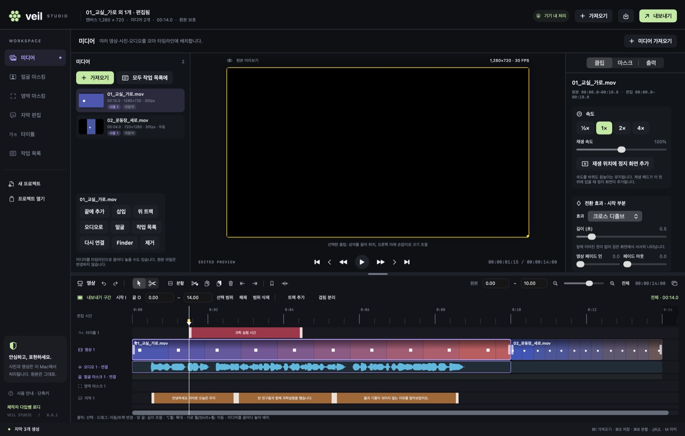
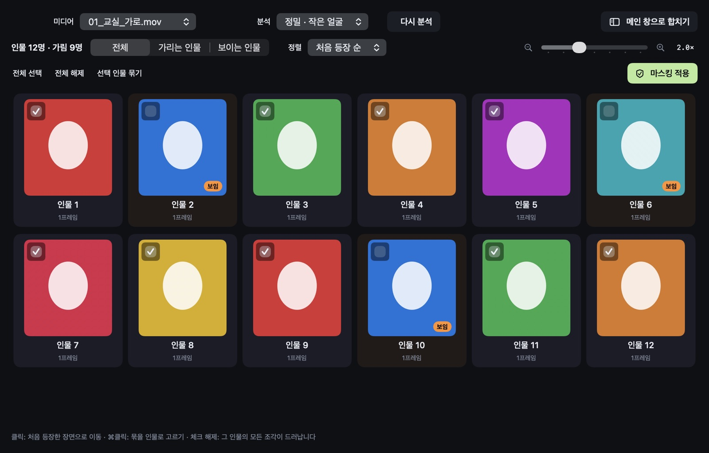
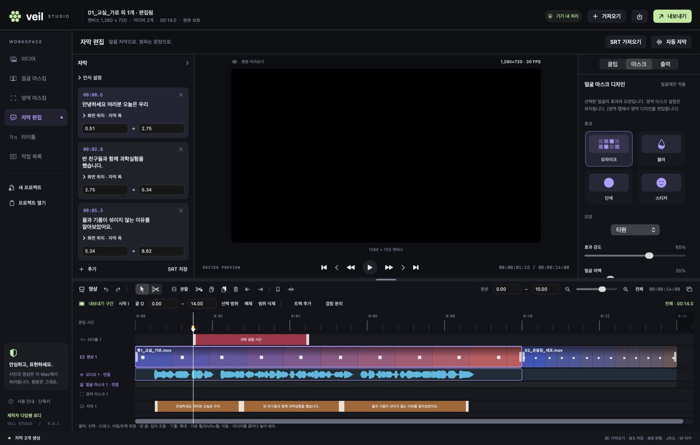
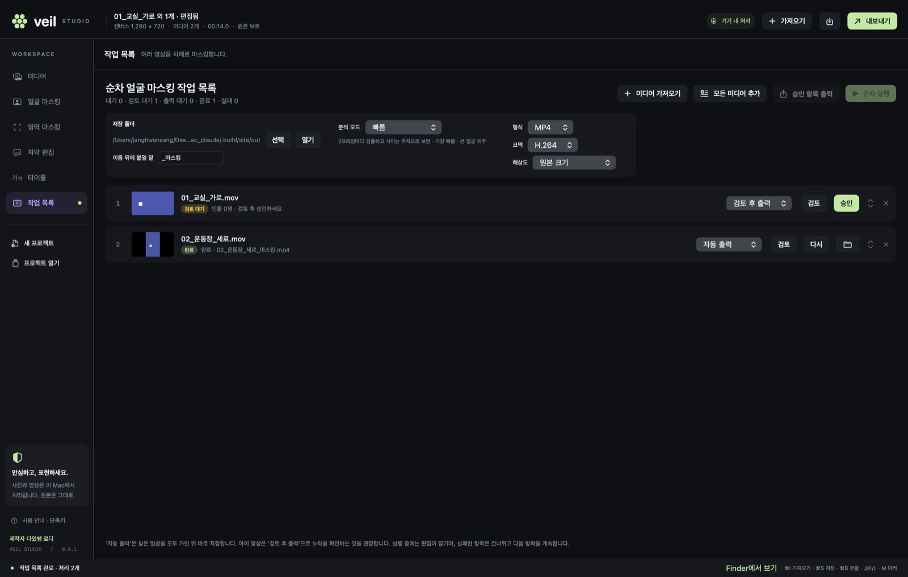
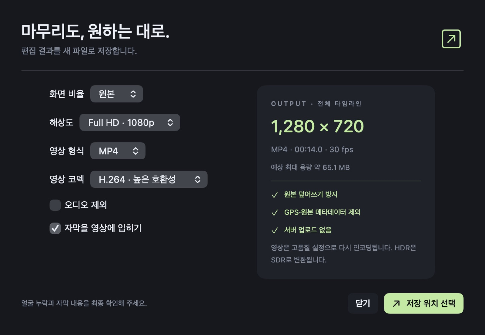

아이들이 나오는 수업·행사 영상에서 얼굴을 자동으로 찾아 가리고, 말소리를 자막으로 바꿔 주는 영상 편집기입니다. Mac과 Windows에서 쓸 수 있습니다. 여러 영상을 이어 붙여 편집하고, 수십 개 영상도 순서대로 한 번에 마스킹합니다.

복잡한 편집 프로그램 없이, 공유하기 전에 꼭 필요한 일 — 얼굴 가리기와 자막 — 을 빠르고 확실하게.
모든 프레임에서 얼굴을 찾고, 놓친 프레임은 움직임 추적으로 이어 줍니다. 멀리 있는 작은 얼굴까지 찾는 정밀 모드가 기본입니다.
찾은 얼굴을 인물 단위로 묶어 보여 줍니다. 가릴 사람만 체크하세요. 같은 시간에 함께 나온 얼굴은 절대 한 사람으로 묶지 않습니다.
Whisper large-v3-turbo 모델을 앱에 담았습니다. 말소리 구간만 골라 인식해 음악·무음 구간의 엉뚱한 문장을 줄이고, 읽기 좋은 길이로 나눕니다.
가로·세로가 섞인 여러 영상과 사진, 배경음악을 한 타임라인에서. 전환 효과, 속도, 화면 속 화면, 색 보정, 타이틀까지.
여러 영상을 넣고 ‘순차 실행’. 검토 후 승인하거나, 찾은 얼굴을 모두 가려 폴더에 자동 저장합니다.
원본은 절대 덮어쓰지 않고 새 파일로 저장합니다. 위치(GPS) 등 원본 메타데이터는 결과물에 복사하지 않습니다.
스토어 앱이 아니어서 처음 한 번만 실행 허용이 필요합니다. 쓰는 컴퓨터를 고르세요.
VeilStudio-0.8.1-macOS-arm64.zip 을 받습니다(약 640MB). 음성 인식 모델이 들어 있어 용량이 큽니다.
다운로드 폴더에서 zip을 더블클릭하면 Veil Studio 앱이 나옵니다. 이 앱을 응용 프로그램 폴더로 끌어다 놓으세요.
개발자 서명·공증 전 빌드라 더블클릭하면 “열 수 없습니다” 경고가 뜰 수 있습니다.
“기억은 선명하게, 얼굴은 안전하게.” 화면이 보이면 준비 완료입니다. 영상을 창에 끌어다 놓아 시작하세요.
VeilStudio-Setup-0.7.0.exe 를 받습니다(약 1.3GB). 음성·얼굴 모델과 실행에 필요한 런타임이 모두 들어 있어 별도 설치가 필요 없습니다.
받은 파일을 더블클릭합니다. 코드 서명 전 빌드라 파란색 “Windows의 PC 보호”(SmartScreen) 창이 뜰 수 있습니다.
.veilproject 파일이 연결됩니다.받은 파일이 손상되지 않았는지 PowerShell에서 확인할 수 있습니다.
Get-FileHash .\VeilStudio-Setup-0.7.0.exe -Algorithm SHA256d9da50102d55d77e307e404f2f0318e64ae2b84f1b201b0c410898603362b6d2 이면 정상입니다.바탕화면의 Veil Studio를 실행하고 영상을 끌어다 놓으세요. 단축키는 Mac의 ⌘ 대신 Ctrl을 씁니다(예: Ctrl+O 열기, Ctrl+E 내보내기, Ctrl+B 분할).
두 버전은 따로 개발되고 있습니다. Windows는 이전 버전(0.7) 기준이라 Mac에만 있는 기능이 있고, 반대로 Windows에만 있는 기능도 있습니다. 아래 사용 방법은 Mac 0.8.1 기준입니다.
| 기능 | Mac 0.8.1 | ⊞ Windows 0.7.0 |
|---|---|---|
| 얼굴 자동 마스킹 · 인물별 선택 · 모자이크/블러/단색/스티커 | ● | ● |
| 작은 얼굴 정밀 검출 | ● | ● |
| 검출이 끊긴 프레임 추적·보간, 누락 의심 구간(주황) 표시 | ● | — |
| 영역 마스킹(직접 그리기·키프레임) | ● | ● |
| Whisper turbo 한국어 자막 · 음성 구간만 인식 | ● | ● (NVIDIA GPU 가속) |
| 배경음악 제거 후 자막 인식 (음악이 큰 영상) | — | ● |
| 분석·자막·내보내기 중에도 편집 | ● | ● |
| 여러 영상·사진 이어 붙이기, 레터박스 맞춤 | ● | ● |
| J/K/L·프레임 이동·마커·스냅·확대 타임라인 | ● | ● |
| 클립 볼륨·페이드·밝기/대비/채도 | ● | ● |
| 순차 얼굴 마스킹 작업 목록 · 검토 창 | ● | — |
| 전환 효과 · 속도 조절 · 정지 화면 | ● | — |
| 화면 속 화면(크기·위치·회전·자르기) · 색온도 | ● | — |
| 타이틀 · 독립 오디오(배경음악) 트랙 · 오디오 분리 | ● | — |
| 타임라인·인물 선택 창 분리(다른 모니터), 얼굴 1–4배 확대 | ● | — |
.veilproject는 Windows 0.7에서 열 수 없습니다. 두 컴퓨터를 오가며 작업한다면 결과 영상(MP4)으로 주고받거나, 같은 운영체제에서 마무리해 주세요. Windows 0.7에서 만든 프로젝트는 Mac 0.8에서 열 수 있지만, 여러 파일을 쓴 프로젝트는 첫 파일만 인식할 수 있습니다.Mac 0.8.1 화면 기준입니다. Windows에서는 ⌘ 대신 Ctrl을 쓰며, 일부 기능은 아직 없습니다. 가장 많이 쓰는 흐름: 영상 불러오기 → 얼굴 분석 → 가릴 인물 선택 → 자막 → 내보내기.
영상·사진·오디오를 창에 끌어다 놓거나 ⌘O로 고릅니다. 여러 개를 고르면 순서대로 이어 붙인 프로젝트가 만들어지고, 폴더째 가져올 수도 있습니다.
얼굴 마스킹 탭에서 얼굴 분석을 누르세요. 분석하는 동안에도 다른 편집을 계속할 수 있습니다.

자막 편집 탭 → 자동 자막. 여러 영상의 말소리를 각각 인식해 컷 위치에 맞춰 배치합니다.

타임라인에서 자르고 옮기고, 오른쪽 클립 검사기에서 세부를 조절합니다.
미디어 탭에서 모두 작업 목록에 → 작업 목록 탭에서 저장 폴더를 고르고 순차 실행.
원본이름_마스킹.mp4로 저장되고 기존 파일을 덮어쓰지 않습니다.
상단 내보내기(⌘E)에서 화면 비율(원본·16:9·9:16·1:1·4:3), 해상도(원본~4K), MP4/MOV, H.264/HEVC를 고르고 저장 위치를 지정합니다. 내보내는 동안에도 편집을 계속할 수 있습니다.

글자를 입력하는 중에는 한 글자 단축키가 동작하지 않습니다.
| 동작 | 단축키 | 동작 | 단축키 |
|---|---|---|---|
| 재생 / 일시정지 | Space | 되감기 · 정지 · 빨리 재생 | J K L |
| 1프레임 이동 | ← → | 10프레임 이동 | ⇧← ⇧→ |
| 이전·다음 편집 지점 | ↑ ↓ | 재생 위치에서 분할 | ⌘B |
| 자르기 / 선택 도구 | B / A | 스냅 켜기·끄기 | N |
| 마커 추가 | M | 확대 · 축소 · 전체 보기 | ⌘= ⌘- ⇧Z |
| 내보내기 시작·끝 | I O | 정지 화면 · 전환 | ⌥F ⌘T |
| 타임라인 창 분리 | ⌥⌘T | 인물 선택 창 | ⌥⌘P |
| 얼굴 분석 · 자동 자막 | ⇧⌘F ⇧⌘R | 저장 · 내보내기 | ⌘S ⌘E |
아니요. 얼굴 분석과 음성 인식은 모두 Mac 안에서 처리합니다. 인터넷 연결이 없어도 동작합니다. (macOS 26의 Apple 새 인식기를 처음 고를 때만 Apple 언어 자료를 내려받을 수 있습니다.)
아닙니다. 아주 작거나, 옆을 보거나, 가려진 얼굴은 놓칠 수 있습니다. 주황색 ‘검토 권장 구간’을 확인하고, 필요한 곳은 영역 마스크로 보완한 뒤 공유하세요. 블러·모자이크보다 단색 마스크가 가장 확실합니다.
MOV·MP4·M4V(H.264·HEVC·ProRes 등), 사진 JPEG·PNG·HEIC·TIFF, 오디오 M4A·WAV·MP3·AIFF. MKV·WebM은 먼저 MP4로 변환해 주세요. 결과물은 MP4/MOV, 사진은 PNG/JPEG/TIFF/HEIC입니다.
편집 내용은 자동으로 저장되며, 비정상 종료 후 다시 열면 복구할지 묻습니다. 파일 메뉴의 ‘최근 자동 저장 복구’로도 열 수 있습니다.
네. 자동으로 새 형식으로 변환되어 열립니다. 다만 0.8에서 저장한 프로젝트는 0.7에서 열 수 없습니다.
Apple 개발자 서명 전 빌드이기 때문입니다. 앱을 우클릭 → 열기 → 열기를 누르거나, 시스템 설정 → 개인정보 보호 및 보안에서 ‘그래도 열기’를 눌러 주세요.